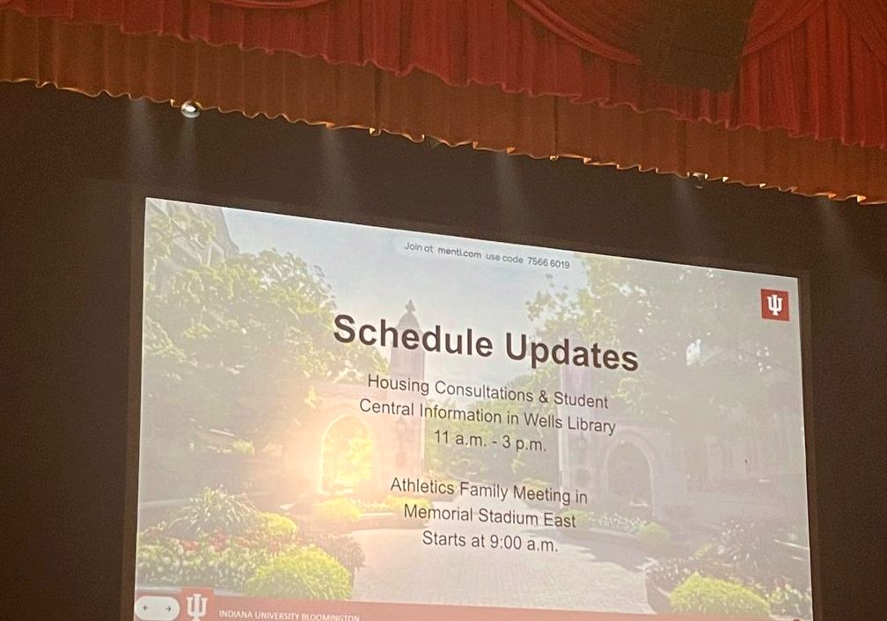
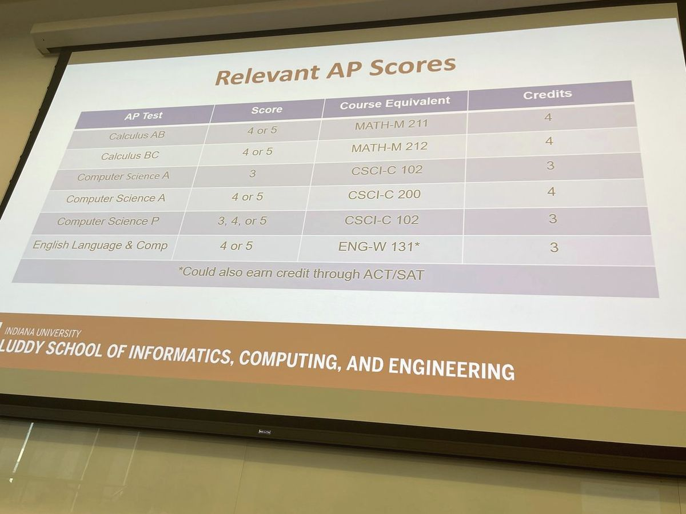
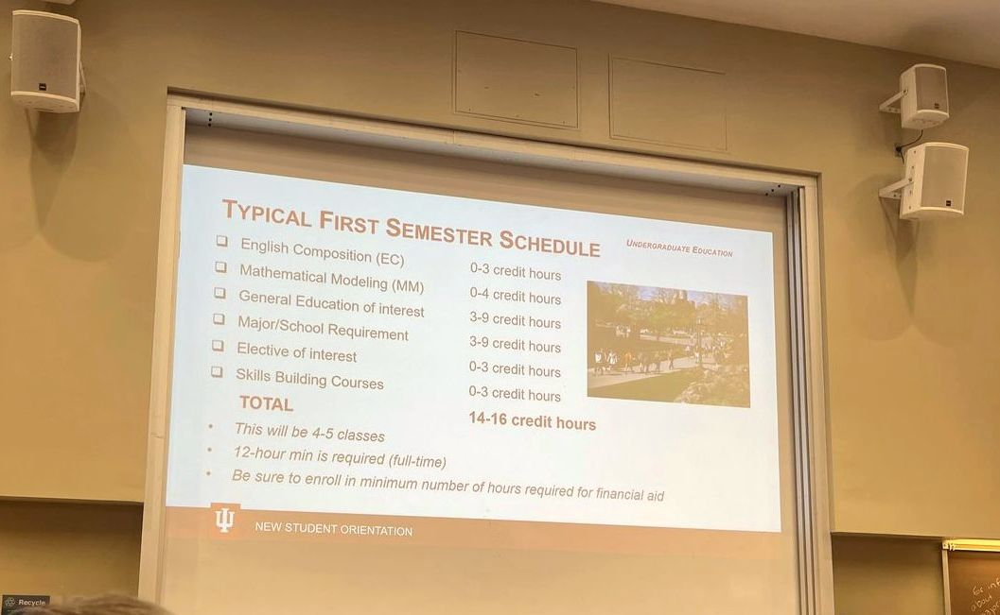
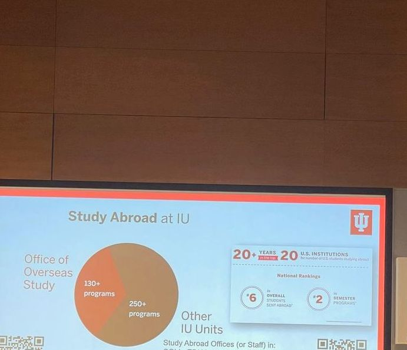
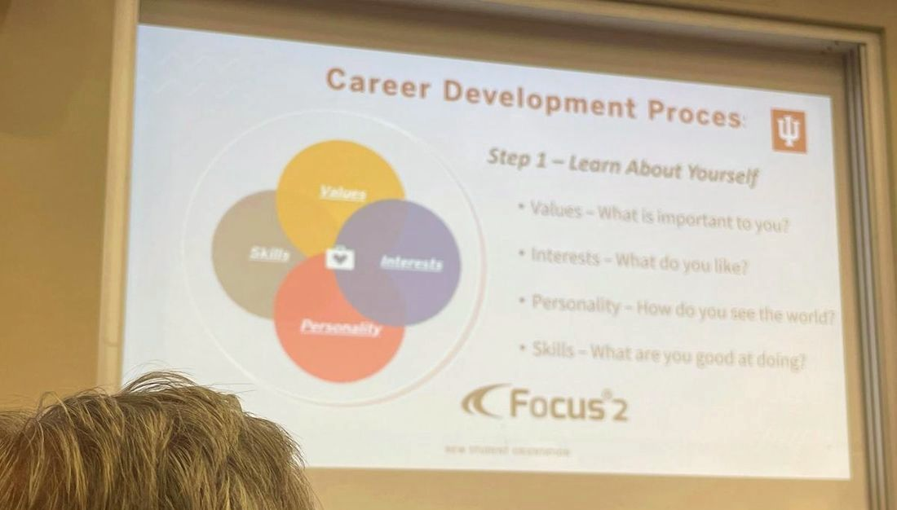
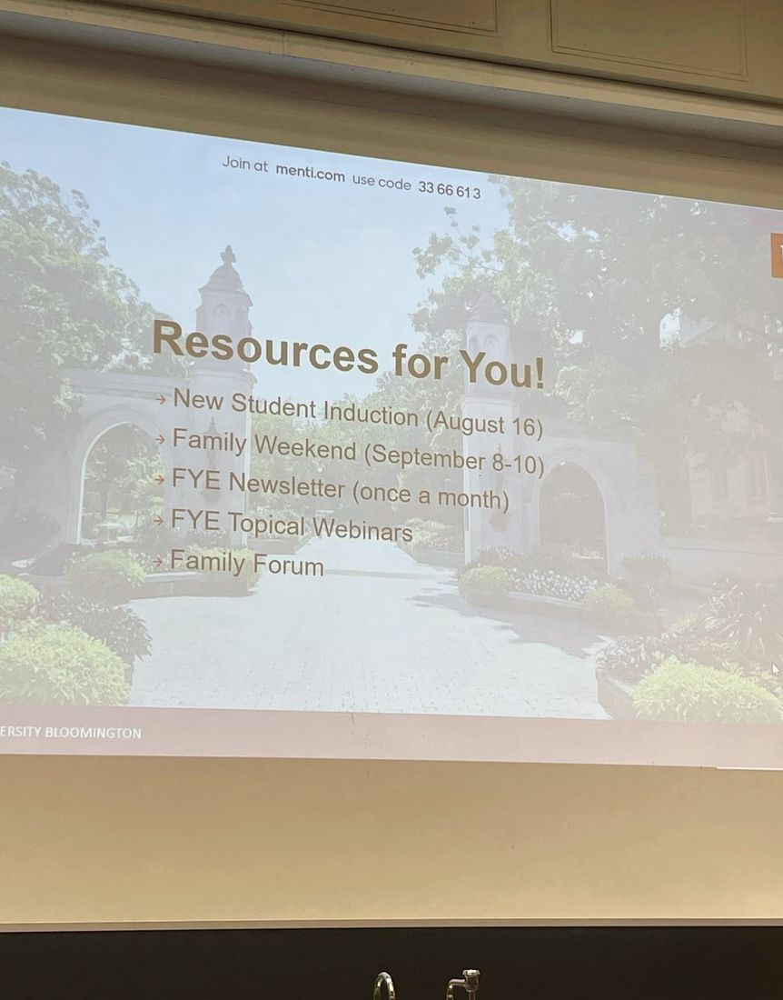

classroom home · sunrise twin · @zhao.langxi
Jade Zhao · IU Luddy · Class of 2027 · giving back
here's what you need to know as an informatics major class of 2027 at indiana university
From Jade Zhao at Indiana University’s Luddy School. For high school seniors and early starters. I took AP Computer Science Principles as a freshman. It is never too early to start. I love IU, and this is me passing notes forward.
Miss Zhao (me) is on hiatus for senior year. This page is giving back while I finish IU. Engineering is for everyone. My high school Asian American robotics teacher taught me that.


Official Luddy & IU links · current
These are live university pages. Prefer them over any student tip sheet (including mine) when you plan courses, cognates, or credit.
- Bachelor of Science in Informatics · Academic Bulletin (current)
- Luddy Degree and Major Requirements · Academic Bulletin (current)
- Informatics courses · Academic Bulletin (current)
- Web Design and Development Cognate · Academic Bulletin (current)
- Advanced Placement Exam Credit · Freshman applicants · IU Admissions (current)
- First Year Experience (FYE) · Student Life (current). Orientation hub on one.iu.edu.
- Orientation to-do checklist · IU FYE / Orientation portal (login). Official IU tasks, not a personal Doc.
- Jade's Checklist · packing · first-party on this site · Archival · Year '23 (2023)
- Find resources: Student Mental Health · iu.edu (current)
- IU Bloomington official academic calendar · Registrar · FA26 to FA27 source of truth
Archival · Year '22 / '23 academic ephemera (not for current planning): older bulletin snapshots BS Informatics 2022 to 2023 · Luddy requirements 2022 to 2023. Your degree rules follow the bulletin year you entered IU. Ask advising. Old Informatics-Insert Google Docs and August 2023 Google Calendars stay off this site (Year '23 archival). Prefer the Registrar + current bulletin above. No Issuu embeds here. INFO-I 541 Fall 2021 syllabus PDF is no longer publicly hosted.
Never too early · AP & AP CSP
I sat AP CSP as a high school freshman. If you are curious about code and systems now, start now. You do not need to wait until senior year of high school.
Official AP exam credit at IU Bloomington (always verify current table): bloomington.iu.edu · AP exam credit.
- Computer Science Principles (AP CSP / “Computer Science P”) · score 3, 4, or 5 →
CSCI-C 102(3 cr) - Computer Science A · score 3 →
CSCI-C 102(3 cr); score 4 or 5 →CSCI-C 200(4 cr)
Send official scores from the testing agency to IU Admissions. Your counselor can help map credit to your intended major. Credit tables can change, so read the live page.
Orientation & FYE
Show up prepared. Know where advising lives. Bring questions about first-semester load, AP credit, and how Informatics sequences with GenEd.
Bloomington orientation hub: one.iu.edu · Orientation Bloomington. First Year Experience: studentlife.indiana.edu · FYE. Orientation task list (login): FYE to-do checklist.

Mental health resources
College is a lot. IU publishes official student mental health resources. Use them. I am linking out only. I am not giving clinical advice.
Informatics courses · Class of 2027 notes
Humble take from someone still in it. This is not a grade guarantee and not a copy of the Reddit thread. That post (thanks again, Let's break down the classes in Informatics) showed me what “giving back” looks like for Luddy students.
- Core path · Expect a ladder through intro, math foundations, social informatics, infrastructure (Python), HCI, and information representation. Prerequisites matter. Ask advising before you skip around.
- Office hours · Go early on group project courses. Do not be the teammate who disappears.
- Design vs. code · Some courses feel creative and project-heavy. Some feel like systems and databases. Both count. Follow what you can sustain.
- Cognate / minor · Informatics pairs tech with another field. Pick something you will actually use. Business, media, security tracks, and more exist. Confirm current options in the bulletin.
- Capstone & topics · Save bandwidth for later. Topic courses and capstone vary a lot by semester.
For official requirements, use the Luddy bulletin and your advisor, not a blog post (including this one). Community threads age. Policies update.

How to get involved
- Talk to Luddy advising early about first-year load and AP placement.
- Join a student org or peer mentoring space once you land. Showing up beats lurking forever.
- Build something small you can explain in plain language. Portfolio > vibes.
- When you have notes that helped you, pass them on. That is the whole point of this page.
Campus survival · Year '23 archive
Archival · Year '23 (2023)
Student-life notes now live first-party on this site (no Google Docs / Issuu). Visitors, dorms, packing checklist, welcome week, bucket list, outfits, coffee, and Q&A. Archival · Year '23 (2023). Tips from Jade Zhao IU · written and curated around 2023. They are not FA26 to FA27 tip sheets. Verify hall rules and dates on official IU pages. School Instagram only: @zhao.langxi.
- Campus survival · Year '23 · full first-party archive (title, meta, and intro banner all dated 2023).
- Packing checklist · Welcome Week · dorms · coffee · bucket list · Q&A · Year '23 snapshots
- IU Bloomington official academic calendar · Registrar · current · FA26 to FA27 source of truth (use this for deadlines, not the tip archive). Hub: registrar.indiana.edu/official-calendar.
- FA26 key dates (verify live · official only) · Fall 2026 registration begins · classes begin · final exams (per IU bulletin / Registrar). Spring 2027 and Fall 2027: same official calendar.

